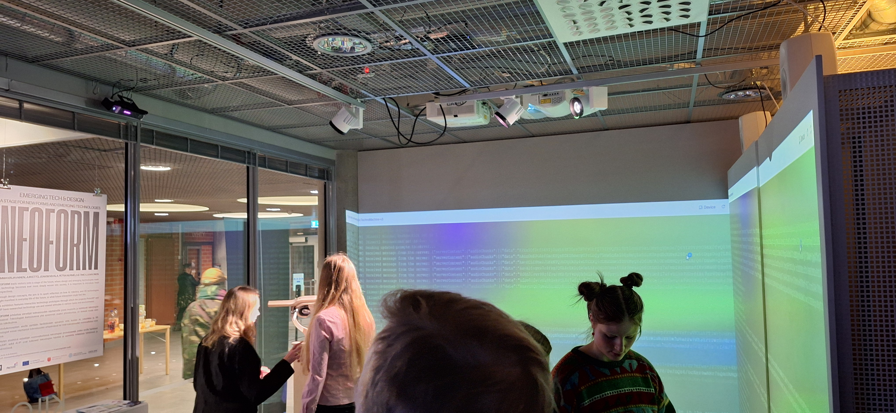
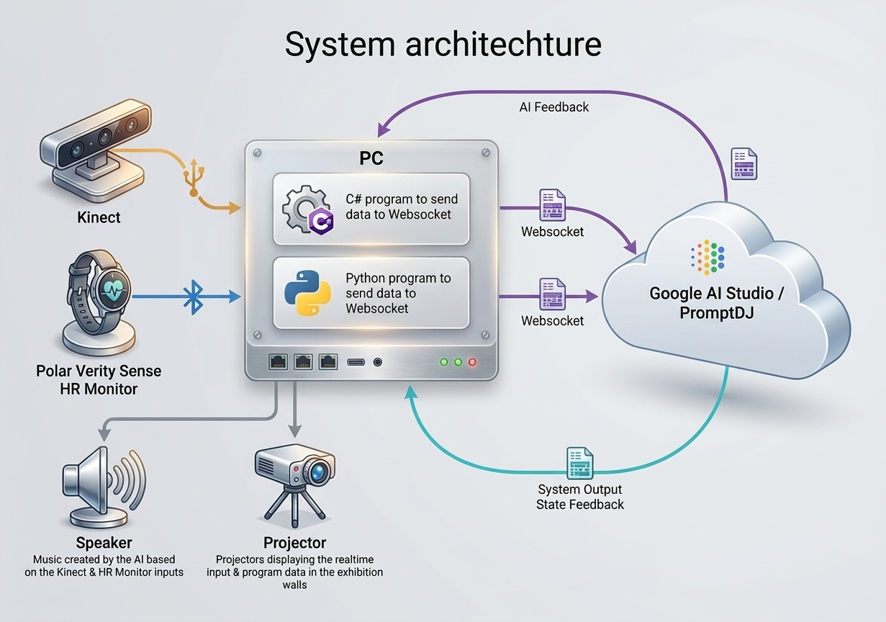
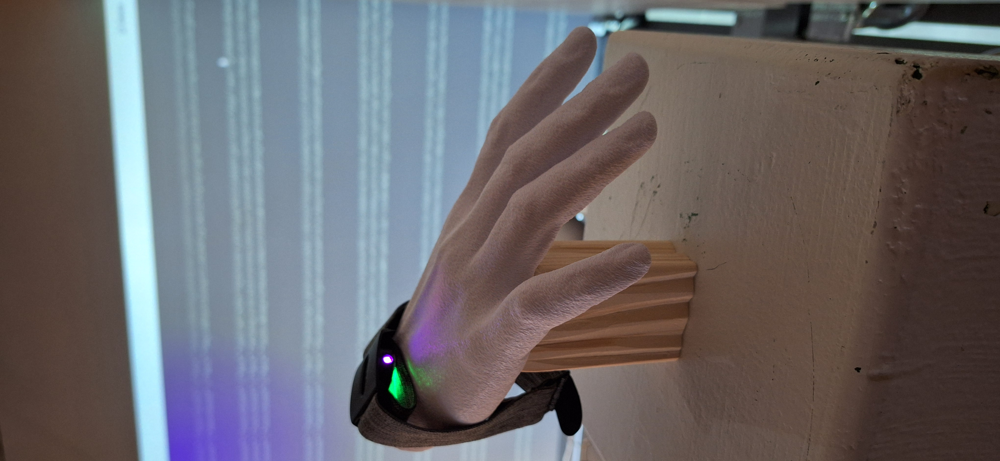

Transhumanistic TechnoMachine!

TranshumanisticTechnoMachine is a real-time generative music installation exploring the relationship between human presence, physiological data and AI-generated sound. Instead of controlling the music directly, visitors become part of the generative system: their presence, movement and heart rate continuously influence an evolving techno soundscape.
I designed and implemented the system as an end-to-end interactive prototype, combining AI-generated audio with real-time sensor data. A Polar Verity Sense captures physiological signals, while Microsoft Kinect tracks the number and activity of people in the space. Custom Python and C# integrations process the sensor data and stream it via WebSockets to a Lit-based frontend and Gemini Lyria audio engine. The installation also visualizes the system data in the exhibition space, making the relationship between visitor activity and the generated sound visible.

